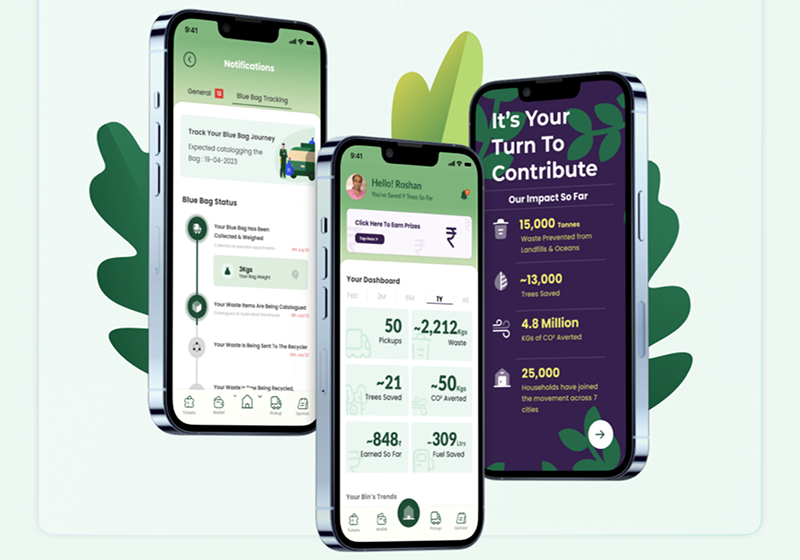

A revolutionary way to manage your dry waste with state-of-the-art
app-based collection service. We bring convenience, transparency, and
rewards right to your doorstep, making waste disposal not just
effortless but also rewarding.
Why Choose Our Service ?
-
Eco-Friendly Waste Management :
We prioritize the environment by ensuring all the dry waste you provide is carefully tracked and recycled through eco-friendly channels. Our mission is to significantly reduce landfill waste and promote a more sustainable and greener future.
-
Convenience at Your Fingertips :
Managing your dry waste has never been easier. With our user-friendly app, you can schedule waste pickups with just a tap. Say goodbye to the hassle of sorting and transporting your waste. Simply leave it to us to handle everything from your home.
-
Real-Time Tracking :
Transparency is at the core of our service. Our app allows you to track the entire recycling process of your waste, providing you with real-time updates. You’ll know exactly how your contributions are making a difference, fostering trust and accountability.
-
Incentives for Your Contribution :
Your waste is valuable! For every kilogram of dry waste you provide, you’ll receive direct incentives. Our app ensures that these payments are seamlessly transferred to your bank account, turning waste disposal into a rewarding experience. It’s not just about cleaning up; it’s about giving back to you.
How It Works
-
Download the App :
Get started by downloading our app from the App Store or Google Play. Sign up and receive your QR-coded bags.
-
Fill the Bags :
Use the provided QR-coded bags for your dry waste. These bags help us track the waste and ensure it is recycled properly.
-
Schedule a Pickup :
Using the app, schedule a pickup time that suits you best. Our team will come to your home, scan the QR codes, and collect the bags.
-
Track Your Waste :
Follow the journey of your waste in real-time through the app. You'll know exactly how and where your waste is being recycled.
-
Receive Rewards :
Earn incentives for your contribution to a cleaner environment. Payments are directly transferred to your bank account, rewarding you for every kilogram of waste recycled.
